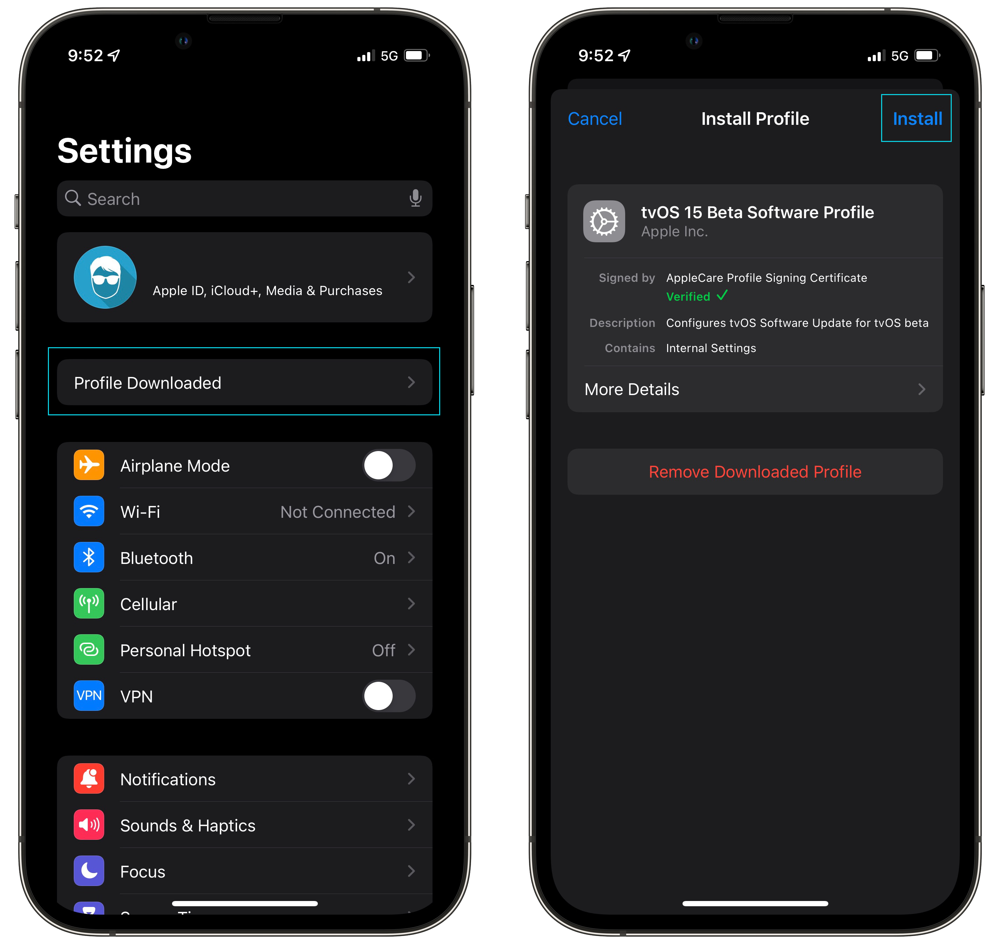

Xóa gói cập nhật đã tải về
Vui lòng đảm bảo bạn đã xóa gói cập nhật đã tải về trong
Cài đặt > Chung > Lưu trữ iPhone.
Nếu bạn không thấy bất kỳ gói cập nhật nào của iOS hoặc iPadOS xuất hiện ở đây, tiếp tục bước tiếp theo.
Cài đặt Hồ sơ
Tải xuống hồ sơ tại đây.
Thiết bị của bạn sẽ yêu cầu bạn cho phép tải xuống hồ sơ.
Sau khi cho phép, mở Cài đặt, chạm vào hồ sơ và làm theo hướng dẫn trên màn hình để cho phép cài đặt.

Nhớ khởi động lại
Đừng quên khởi động lại thiết bị sau khi cài đặt hồ sơ để áp dụng bất kỳ thay đổi nào.
Sau khi khởi động lại, phần Cập nhật phần mềm trong ứng dụng Cài đặt sẽ hiển thị rằng bạn đã cập nhật bất kể phiên bản iOS bạn đã cài đặt.
Để hoàn nguyên các thay đổi, chỉ cần xóa hồ sơ khỏi cài đặt và khởi động lại thiết bị của bạn.